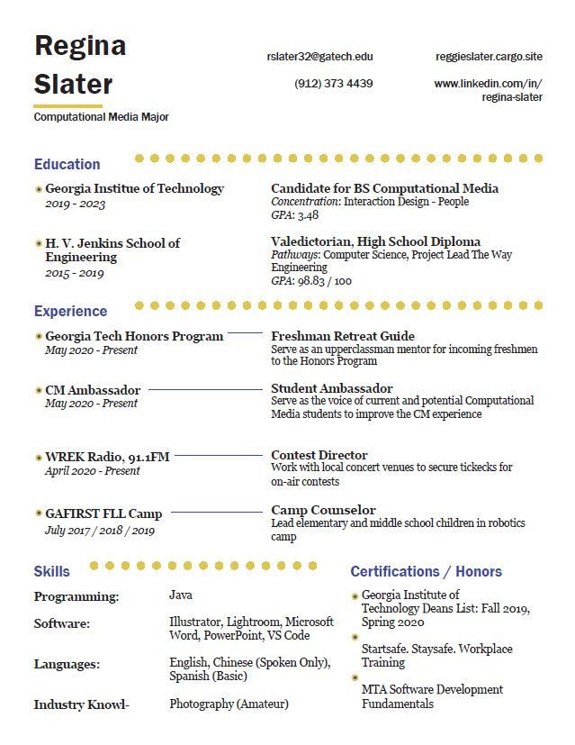

Reggie Slater is a student photographer currently studying at the Georgia Institute of Technology. As a Computational Media major, she seeks to create work that are aesthetically pleasing and easy to navigate. Photography has always been a passion, and she’d love to share what she captures with her lens with a large community.
